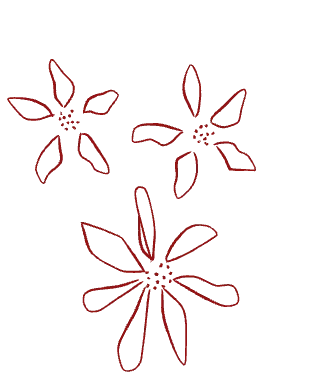
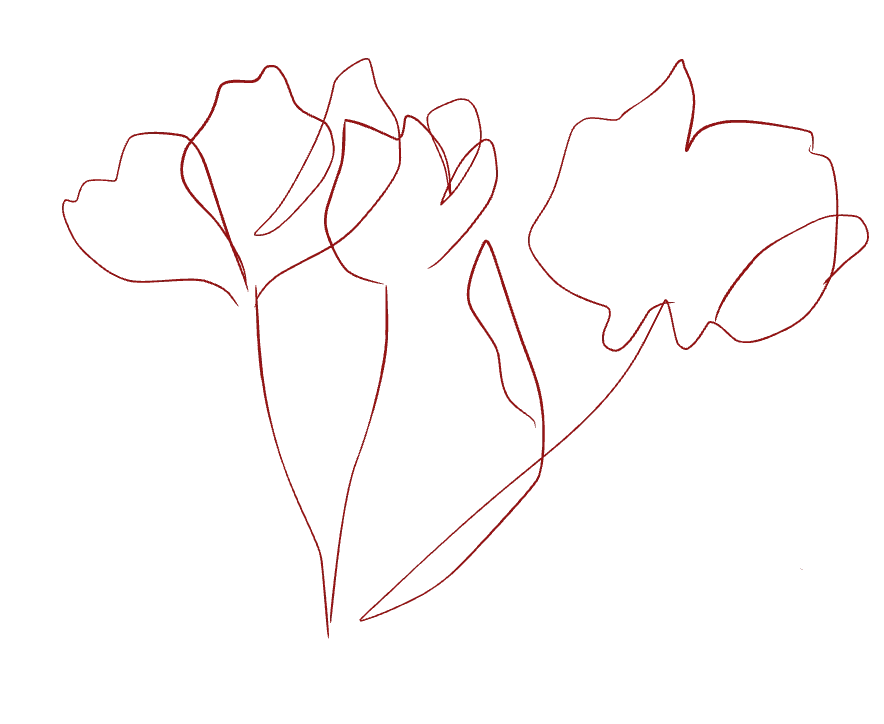

MY PROJECTS
My projects from Semester 1
 TEMA 2
I tema 2 arbejdede vi med et mobilsite, som var vores studiestartsprøve. Websitet blev kodet mobile-first ud fra det udleverede wireframe og layoutdiagram med tekst og billeder, og vi indsatte vores eget foto med tekst på min_computer.html. Under arbejdet fik vi prøvet kræfter med grids ud fra layoutdiagrammet og styling i CSS, hvor vi anvendte én CSS-fil, farver, to fonte samt margin og padding. Siden blev bygget, så den både fungerede på mobil og desktop.
GÅ TIL PROJECT→TEMA 3
I tema 3 arbejdede vi med UX/UI-metoder og opnåede en forståelse for samspillet mellem brugere og digitale brugergrænseflader. I dette tema skulle vi arbejdede du fra en selv valgt tema hvor vi skulle lære at arbejde systematisk med research, design og test i digital produktudvikling, hvor vi gennem processen lærte at dokumentere vores arbejde og basere vores design på brugernes behov.
GÅ TIL PROJECT→
TEMA 4
I dette tema arbejdede jeg med udviklingen af et Emergency Site med fokus på at lære forskellige teknologier inden for webdesign. Sitet fungerede som en sandkasse, hvor vi arbejdede med nye visuelle løsninger og kode i CSS og JavaScript. Gennem forløbet færdiggjorde vi manglende dele af sitet og opnåede en bedre forståelse for samspillet mellem visuelle løsninger og funktion.
GÅ TIL PROJECT→TEMA 5
I dette tema arbejdede vi for første gang med et større gruppeprojekt, hvor vi redesignede en virksomheds website. Projektet gav os erfaring med at samarbejde om hele processen fra idéudvikling til kodning og test, koordinere opgaver, kommunikere effektivt og dokumentere design- og udviklingsbeslutninger baseret på brugerbehov og webkonventioner.
GÅ TIL PROJECT→